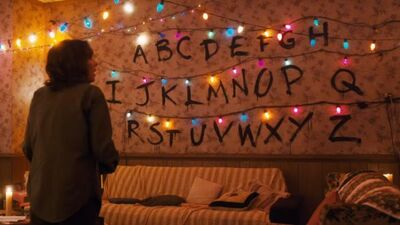
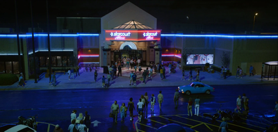
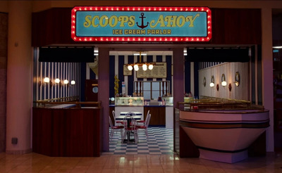
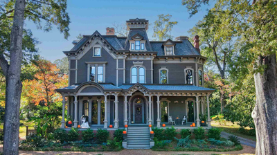

Pared de las letras
La famosa pared se ilumina con letras para comunicar mensajes entre los personajes y el "Otro Lado".
Se usan luces de Navidad conectadas a una pared, que encienden letras en secuencia. Esta técnica permite
la comunicación con entidades de esa dimensión. Es crucial para transmitir información en situaciones
críticas.

Starcourt Mall
El Starcourt Mall es un centro comercial que aparece en la tercera temporada. Es uno de los principales escenarios de la temporada y está ubicado en Hawkins, Indiana.
El centro comercial es un símbolo de la modernidad de los años 80 donde ocurre gran parte de la trama de esta temporada.

La heladeria Scoop Ahoy
Es un establecimiento de helados ubicado en el centro comercial Starcourt Mall. Scoops Ahoy se convierte en un punto clave para el desarrollo de la trama,
ya que los protagonistas descubren una red secreta de contrabando soviético en el centro comercial, lo que los lleva a investigar actividades misteriosas
en el centro comercial y en el "Otro Lado"

Casa de Vecna
La casa de Vecna es clave en su historia, siendo el lugar donde desarrolló sus habilidades psíquicas, como causar visiones aterradoras.
Conectada al "Otro Lado" (The Upside Down), actúa como un portal entre dimensiones. Es el origen de su poder y su base de operaciones.
Un sitio sombrío y lleno de misterio que juega un papel central en la trama.